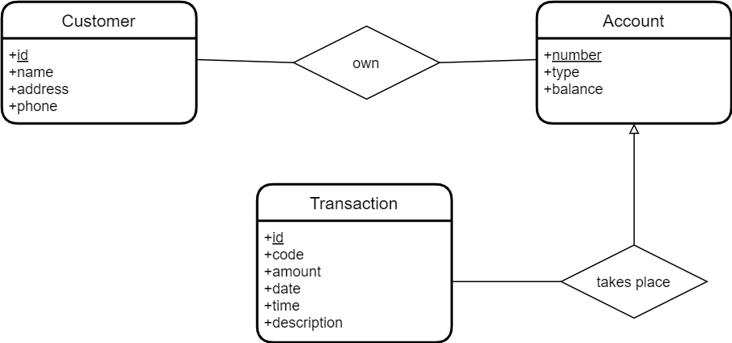
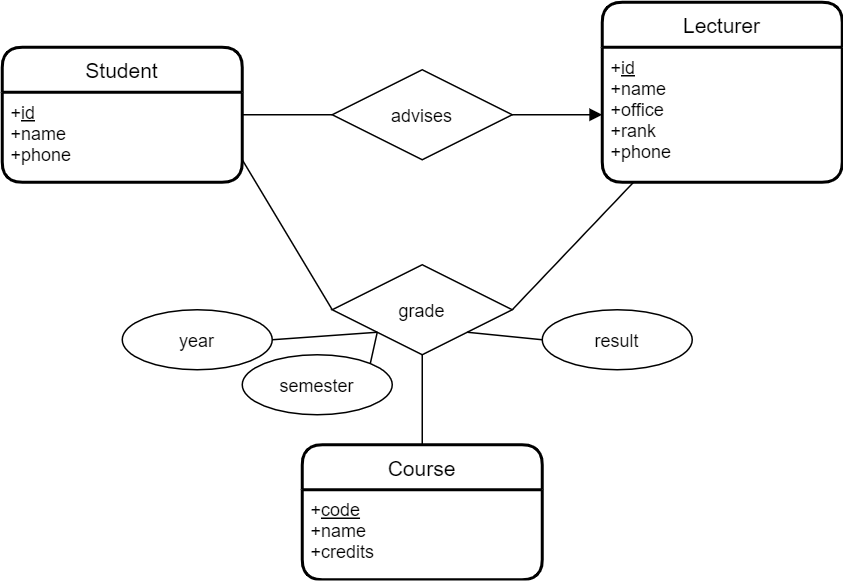
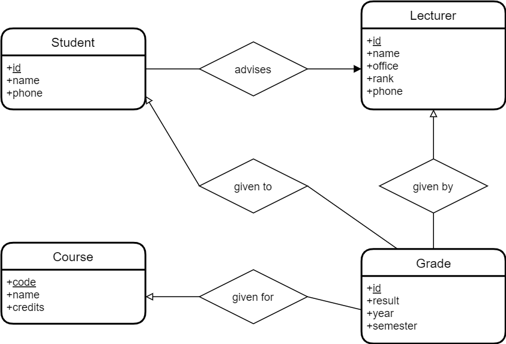
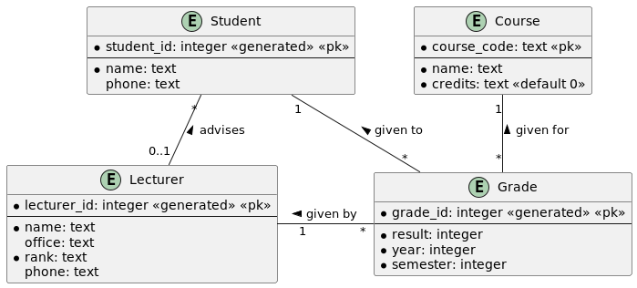
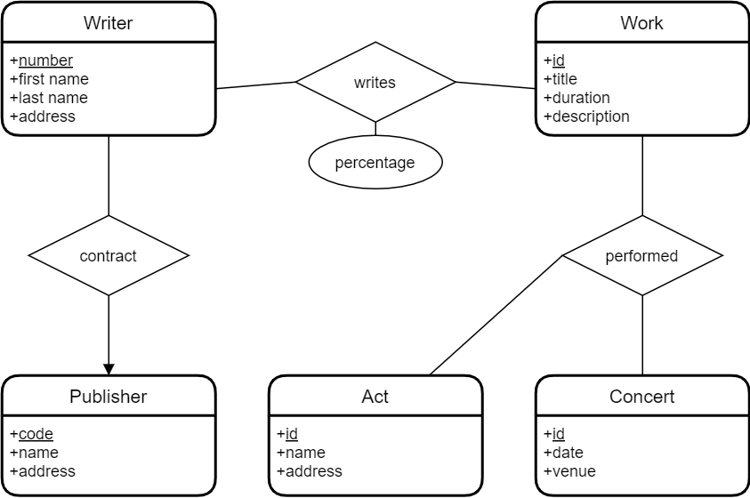
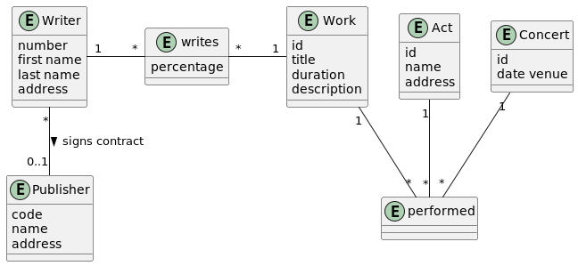
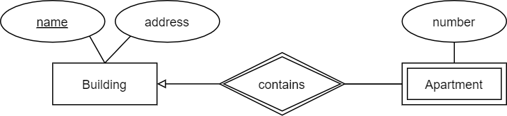
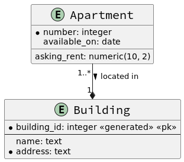

Exemples
Base de Données Bancaire Simple
- L'application de base de données appelée BANK, qui suit les clients d'une
banque et leurs comptes.
- Les clients sont identifiés par leur nom, adresse, téléphone et ID client.
- Les comptes ont des numéros, des types (par exemple, épargne, courant) et des soldes.
- Enregistrer également le(s) client(s) qui possèdent un compte.
- Une transaction a lieu sur un seul compte.
- Chaque transaction a un ID, un code, un montant, une date, une heure et une description.
Traditionnelle
UML

Code
@startuml
entity Customer {
customer_id
--
name
address
phone
}
entity Account {
number
--
type
balance
}
entity Transaction {
transaction_id
--
code
amount
date
time
description
}
Customer "1..*" -- " * " Account: > owns
Transaction " * " -- "1" Account: > takes place
@enduml
Base de Données d'un Collège
- Dans cette base de données, vous devez enregistrer les étudiants, les
enseignants, les cours, les notes et les conseillers étudiants.
- Chaque étudiant a un numéro d'étudiant, un nom et une adresse.
- Chaque enseignant a un numéro d'employé, un nom, un numéro de bureau, un rang et un numéro de téléphone.
- Pour chaque cours, son code, son nom et son nombre de crédits sont enregistrés.
- Une note est donnée à un étudiant par un enseignant pour un cours enseigné pendant un semestre (A, B ou C) d'une année particulière.
- Les conseillers des étudiants sont des enseignants.
Traditionnelle (avec association grade)
Traditionnelle (avec entité grade)
UML
Base de Données des Droits d'Auteur de Musique
- Vous êtes chargé de concevoir une base de données pour une agence de collecte
de droits d'auteur de musique, incluant les informations suivantes :
- Un auteur a un numéro d'auteur, un prénom, un nom de famille et une adresse.
- Les auteurs peuvent être signés avec un éditeur. Les éditeurs signent de nombreux auteurs.
- Les éditeurs ont un code éditeur, un nom et une adresse.
- Les auteurs écrivent des œuvres. Les œuvres peuvent avoir plus d'un auteur. Chaque auteur écrit un pourcentage d'une œuvre.
- Une œuvre a un titre, une durée et une description.
- Les œuvres sont interprétées lors de concerts (ou spectacles de musique) par un groupe.
- Un concert a une date et un lieu.
Traditionnelle
UML
Code
@startuml
entity Writer {
number
first name
last name
address
}
entity Work {
id
title
duration
description
}
entity Publisher {
code
name
address
}
entity Act {
id
name
address
}
entity Concert {
id
date venue
}
Writer "*" -- "0..1" Publisher: > signs contract
entity writes {
percentage
}
Writer "1" - "*" writes: " "
writes "*" - "1" Work: " "
entity performed {
}
Work "1" -- "*" performed
Act "1" -- "*" performed
Concert "1" -- "*" performed
@enduml
Appartements à Louer
-
Vous devez concevoir une base de données pour gérer les informations d'une entreprise gérant un ensemble d'appartements à louer.
- Cette entreprise gère de nombreux bâtiments, chacun composé d'au moins un appartement.
- Supposons qu'un appartement puisse être identifié de manière unique par son numéro dans son bâtiment.
- Pour chaque appartement, il y a au moins un locataire, s'il est loué.
- Le loyer mensuel et la date de fin de bail (si connue) doivent être inclus.
- Pour chaque appartement disponible prochainement, la date de disponibilité et le loyer mensuel demandé doivent être inclus.
- Pour chaque locataire, le prénom, le nom de famille, le numéro de téléphone à domicile, le nom de son employeur et son numéro de téléphone professionnel doivent être inclus.
-
Cette date de fin de bail n'est pas toujours le jour suivant la fin du bail précédent car un appartement pourrait être indisponible pendant un certain temps en raison de rénovations, par exemple.
- En suivant un raisonnement similaire, le loyer mensuel demandé n'est pas nécessairement le même que le loyer actuel.
Entité Faible : Appartement
Notation Traditionnelle
Traditionnelle 1
Traditionnelle 2
UML
Code
@startuml
skinparam linetype ortho
skinparam classFontSize 20
skinparam classFontName Source Code Pro
hide empty methods
entity Apartment {
* number: integer
asking_rent: numeric(10, 2)
available_on: date
}
entity Building {
* building_id: integer <<generated>> <<pk>>
--
name: text
* address: text
}
Apartment "1..*" --* "1" Building : > located in
@enduml